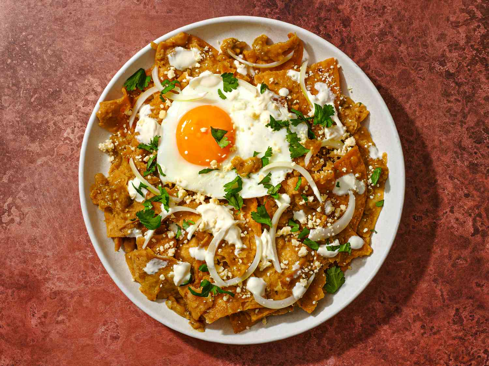

HOME
Chilaquiles

Description
This is a Recipe the make some Chilaquiles...
Ingredients
- 12 corn tortillas, preferably stale, or left out overnight to dry out a bit, quartered or cut into 6 wedges
- Corn oil, or other neutral oil for frying
- Kosher salt
- 1 1/2 to 2 cups red chile sauce or salsa verde, store-bought or homemade (see end of recipe for homemade versions)
- Sprigs of epazote, optional
- Cotija cheese or queso fresco
- Crema Mexicana or creme fraiche
- Cilantro, chopped
- 1 red onion, chopped
- Avocado, sliced or roughly chopped
Making Chilaquiles Step by Step
- Fry the tortillas.
- Heat the Salsa.
- Add fried Tortillas to the salsa.